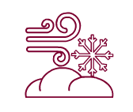
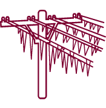
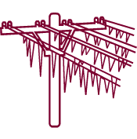
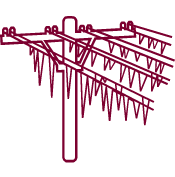

Критические значения параметров метеорологических явлений
Сами по себе атмосферные осадки и изменения температур не несут опасности, значение имеет то, насколько
они могут усилиться. Когда мелкий дождь становится затяжным или превращается в сильный дождь (ливень),
возникает опасность подтопления. Усиление, поначалу легкого ветерка до шквалистого ветра повышает вероятность
обрыва проводов. То же относится и к другим метеорологическим явлениям. С помощью переключателя «усильте» то или
иное явление природы и посмотрите, при каких критических параметрах оно становятся опасным. *Сдвиньте переключатель под иконкой, чтобы увидеть критические параметры.
Ветер
Сильный ветер (шквалистый)
Скорость порывов от 25м/c и более.
Дождь
Сильный дождь (Ливень)
Кол-во осадков 100 мм и более, в период менее чем за 12 часов.
Снег
Сильный снег
Кол-во осадков 20 мм и более, в период менее чем за 12 часов.
Метель
Сильная Метель

При ветре 20 м/c в течение суток с выпадением снега.
Град
Крупный Град
Диаметр градин 20 мм и более.
Гололед
Сильный Гололед

Диаметр отложений на проводах 20 мм и более.
Мороз
Сильный Мороз
Температура воздуха у поверхности земли - 30°C и ниже для Европейской части РФ.


 
